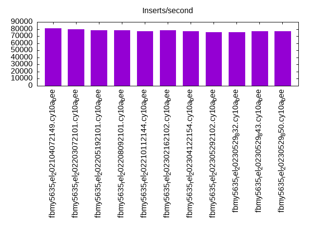
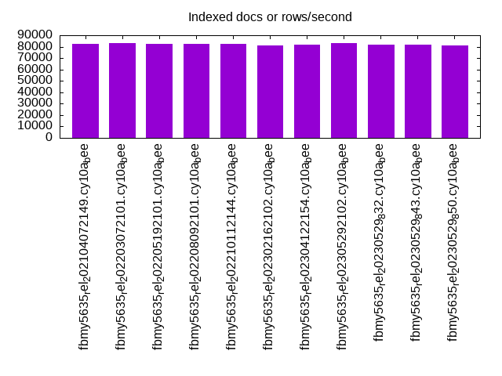
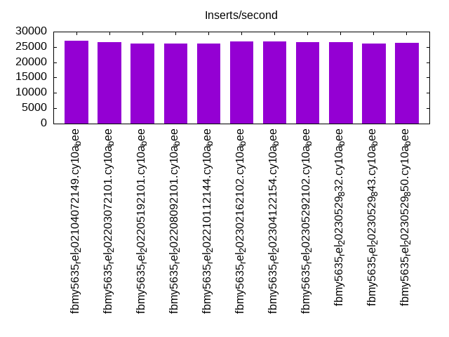
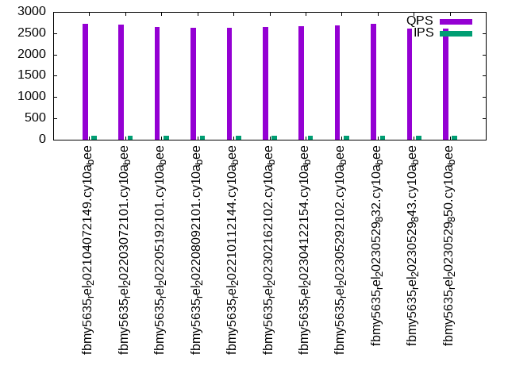
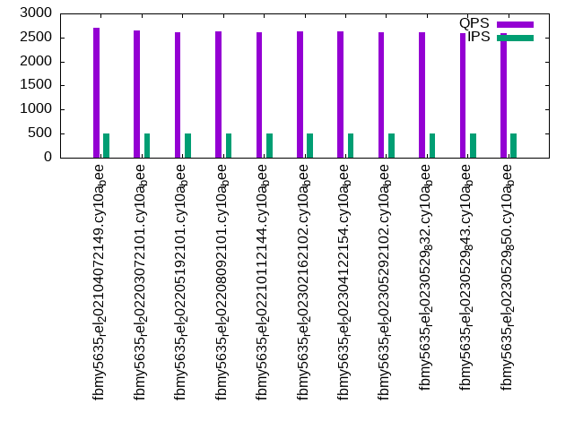
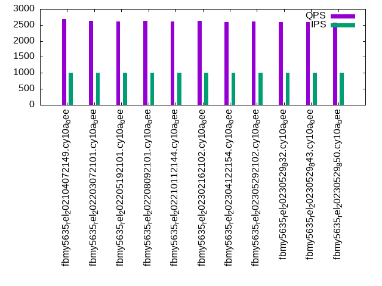

This is a report for the insert benchmark with 20M docs and 1 client(s). It is generated by scripts (bash, awk, sed) and Tufte might not be impressed. An overview of the insert benchmark is here and a short update is here. Below, by DBMS, I mean DBMS+version.config. An example is my8020.c10b40 where my means MySQL, 8020 is version 8.0.20 and c10b40 is the name for the configuration file.
The test server has 8 AMD cores, 16G RAM and an NVMe SSD. It is described here as the Beelink. The benchmark was run with 1 client and there were 1 or 3 connections per client (1 for queries or inserts without rate limits, 1+1 for rate limited inserts+deletes). It uses 1 table. It loads 20M rows per table without secondary indexes, creates secondary indexes, then inserts 100M rows per table with a delete per insert to avoid growing the table. It then does 3 read+write tests for 3600s each that do queries as fast as possible with 100, 500 and then 1000 inserts/second/client concurrent with the queries and 1000 deletes/second to avoid growing the table. The database is cached by the storage engine. Clients and the DBMS share one server. The per-database configs are in the per-database subdirectories here.
The tested DBMS are:
The numbers are inserts/s for l.i0 and l.i1, indexed docs (or rows) /s for l.x and queries/s for q*.2. The values are the average rate over the entire test for inserts (IPS) and queries (QPS). The range of values for IPS and QPS is split into 3 parts: bottom 25%, middle 50%, top 25%. Values in the bottom 25% have a red background, values in the top 25% have a green background and values in the middle have no color. A gray background is used for values that can be ignored because the DBMS did not sustain the target insert rate. Red backgrounds are not used when the minimum value is within 80% of the max value.
| dbms | l.i0 | l.x | l.i1 | q100.1 | q500.1 | q1000.1 |
|---|---|---|---|---|---|---|
| fbmy5635_rel_202104072149.cy10a_bee | 81301 | 82377 | 27012 | 2719 | 2694 | 2686 |
| fbmy5635_rel_202203072101.cy10a_bee | 79681 | 83402 | 26490 | 2697 | 2649 | 2626 |
| fbmy5635_rel_202205192101.cy10a_bee | 78431 | 82377 | 26014 | 2643 | 2604 | 2606 |
| fbmy5635_rel_202208092101.cy10a_bee | 78125 | 82377 | 26110 | 2631 | 2629 | 2621 |
| fbmy5635_rel_202210112144.cy10a_bee | 77220 | 82377 | 26035 | 2628 | 2608 | 2605 |
| fbmy5635_rel_202302162102.cy10a_bee | 78125 | 81376 | 26774 | 2638 | 2621 | 2623 |
| fbmy5635_rel_202304122154.cy10a_bee | 77220 | 82041 | 26716 | 2670 | 2624 | 2594 |
| fbmy5635_rel_202305292102.cy10a_bee | 75758 | 83058 | 26511 | 2674 | 2615 | 2612 |
| fbmy5635_rel_20230529_832.cy10a_bee | 75758 | 81707 | 26469 | 2718 | 2601 | 2599 |
| fbmy5635_rel_20230529_843.cy10a_bee | 77220 | 82041 | 26151 | 2609 | 2597 | 2589 |
| fbmy5635_rel_20230529_850.cy10a_bee | 76628 | 81376 | 26427 | 2606 | 2584 | 2575 |
This table has relative throughput, throughput for the DBMS relative to the DBMS in the first line, using the absolute throughput from the previous table. Values less than 0.95 have a yellow background. Values greater than 1.05 have a blue background.
| dbms | l.i0 | l.x | l.i1 | q100.1 | q500.1 | q1000.1 |
|---|---|---|---|---|---|---|
| fbmy5635_rel_202104072149.cy10a_bee | 1.00 | 1.00 | 1.00 | 1.00 | 1.00 | 1.00 |
| fbmy5635_rel_202203072101.cy10a_bee | 0.98 | 1.01 | 0.98 | 0.99 | 0.98 | 0.98 |
| fbmy5635_rel_202205192101.cy10a_bee | 0.96 | 1.00 | 0.96 | 0.97 | 0.97 | 0.97 |
| fbmy5635_rel_202208092101.cy10a_bee | 0.96 | 1.00 | 0.97 | 0.97 | 0.98 | 0.98 |
| fbmy5635_rel_202210112144.cy10a_bee | 0.95 | 1.00 | 0.96 | 0.97 | 0.97 | 0.97 |
| fbmy5635_rel_202302162102.cy10a_bee | 0.96 | 0.99 | 0.99 | 0.97 | 0.97 | 0.98 |
| fbmy5635_rel_202304122154.cy10a_bee | 0.95 | 1.00 | 0.99 | 0.98 | 0.97 | 0.97 |
| fbmy5635_rel_202305292102.cy10a_bee | 0.93 | 1.01 | 0.98 | 0.98 | 0.97 | 0.97 |
| fbmy5635_rel_20230529_832.cy10a_bee | 0.93 | 0.99 | 0.98 | 1.00 | 0.97 | 0.97 |
| fbmy5635_rel_20230529_843.cy10a_bee | 0.95 | 1.00 | 0.97 | 0.96 | 0.96 | 0.96 |
| fbmy5635_rel_20230529_850.cy10a_bee | 0.94 | 0.99 | 0.98 | 0.96 | 0.96 | 0.96 |
This lists the average rate of inserts/s for the tests that do inserts concurrent with queries. For such tests the query rate is listed in the table above. The read+write tests are setup so that the insert rate should match the target rate every second. Cells that are not at least 95% of the target have a red background to indicate a failure to satisfy the target.
| dbms | q100.1 | q500.1 | q1000.1 |
|---|---|---|---|
| fbmy5635_rel_202104072149.cy10a_bee | 100 | 499 | 998 |
| fbmy5635_rel_202203072101.cy10a_bee | 100 | 499 | 998 |
| fbmy5635_rel_202205192101.cy10a_bee | 100 | 499 | 998 |
| fbmy5635_rel_202208092101.cy10a_bee | 100 | 499 | 998 |
| fbmy5635_rel_202210112144.cy10a_bee | 100 | 499 | 999 |
| fbmy5635_rel_202302162102.cy10a_bee | 100 | 499 | 998 |
| fbmy5635_rel_202304122154.cy10a_bee | 100 | 499 | 998 |
| fbmy5635_rel_202305292102.cy10a_bee | 100 | 499 | 998 |
| fbmy5635_rel_20230529_832.cy10a_bee | 100 | 499 | 998 |
| fbmy5635_rel_20230529_843.cy10a_bee | 100 | 499 | 998 |
| fbmy5635_rel_20230529_850.cy10a_bee | 100 | 499 | 998 |
| target | 100 | 500 | 1000 |
l.i0: load without secondary indexes. Graphs for performance per 1-second interval are here.
Average throughput:
Insert response time histogram: each cell has the percentage of responses that take <= the time in the header and max is the max response time in seconds. For the max column values in the top 25% of the range have a red background and in the bottom 25% of the range have a green background. The red background is not used when the min value is within 80% of the max value.
| dbms | 256us | 1ms | 4ms | 16ms | 64ms | 256ms | 1s | 4s | 16s | gt | max |
|---|---|---|---|---|---|---|---|---|---|---|---|
| fbmy5635_rel_202104072149.cy10a_bee | 0.001 | 99.873 | 0.122 | 0.002 | 0.002 | 0.112 | |||||
| fbmy5635_rel_202203072101.cy10a_bee | 99.870 | 0.125 | 0.003 | 0.002 | 0.109 | ||||||
| fbmy5635_rel_202205192101.cy10a_bee | 99.870 | 0.126 | 0.004 | 0.001 | 0.071 | ||||||
| fbmy5635_rel_202208092101.cy10a_bee | 99.868 | 0.129 | 0.003 | 0.001 | 0.070 | ||||||
| fbmy5635_rel_202210112144.cy10a_bee | 99.868 | 0.128 | 0.003 | 0.002 | 0.072 | ||||||
| fbmy5635_rel_202302162102.cy10a_bee | 99.869 | 0.127 | 0.003 | 0.002 | 0.098 | ||||||
| fbmy5635_rel_202304122154.cy10a_bee | 99.867 | 0.128 | 0.004 | 0.001 | 0.071 | ||||||
| fbmy5635_rel_202305292102.cy10a_bee | 99.865 | 0.131 | 0.004 | 0.001 | 0.065 | ||||||
| fbmy5635_rel_20230529_832.cy10a_bee | 99.865 | 0.131 | 0.003 | 0.002 | 0.066 | ||||||
| fbmy5635_rel_20230529_843.cy10a_bee | 99.867 | 0.128 | 0.005 | 0.001 | 0.069 | ||||||
| fbmy5635_rel_20230529_850.cy10a_bee | 99.866 | 0.131 | 0.002 | 0.002 | 0.073 |
Performance metrics for the DBMS listed above. Some are normalized by throughput, others are not. Legend for results is here.
ips qps rps rmbps wps wmbps rpq rkbpq wpi wkbpi csps cpups cspq cpupq dbgb1 dbgb2 rss maxop p50 p99 tag 81301 0 0 0.0 36.9 13.8 0.000 0.000 0.000 0.174 7991 23.2 0.098 23 0.7 1.8 0.2 0.112 82006 73618 20m.fbmy5635_rel_202104072149.cy10a_bee 79681 0 0 0.0 35.9 13.5 0.000 0.000 0.000 0.174 7829 23.1 0.098 23 0.7 1.8 0.2 0.109 80408 72917 20m.fbmy5635_rel_202203072101.cy10a_bee 78431 0 0 0.0 35.5 13.2 0.000 0.000 0.000 0.173 7673 22.7 0.098 23 0.7 1.8 0.2 0.071 78809 72116 20m.fbmy5635_rel_202205192101.cy10a_bee 78125 0 0 0.0 37.7 13.2 0.000 0.000 0.000 0.174 7662 22.7 0.098 23 0.7 1.8 0.2 0.070 78713 70920 20m.fbmy5635_rel_202208092101.cy10a_bee 77220 0 0 0.0 37.2 13.1 0.000 0.000 0.000 0.173 7613 22.6 0.099 23 0.7 1.8 0.2 0.072 78251 70719 20m.fbmy5635_rel_202210112144.cy10a_bee 78125 0 0 0.0 35.4 13.2 0.000 0.000 0.000 0.173 7671 22.6 0.098 23 0.7 1.8 0.2 0.098 78810 70520 20m.fbmy5635_rel_202302162102.cy10a_bee 77220 0 0 0.0 35.0 13.0 0.000 0.000 0.000 0.173 7553 22.4 0.098 23 0.7 1.8 0.2 0.071 77613 70919 20m.fbmy5635_rel_202304122154.cy10a_bee 75758 0 0 0.0 34.7 12.8 0.000 0.000 0.000 0.173 7472 21.8 0.099 23 0.7 1.8 0.2 0.065 76715 69920 20m.fbmy5635_rel_202305292102.cy10a_bee 75758 0 0 0.0 35.3 12.8 0.000 0.000 0.000 0.173 7475 21.7 0.099 23 0.7 1.8 0.2 0.066 76415 69954 20m.fbmy5635_rel_20230529_832.cy10a_bee 77220 0 0 0.0 35.2 13.1 0.000 0.000 0.000 0.173 7573 22.7 0.098 24 0.7 1.8 0.2 0.069 78010 70420 20m.fbmy5635_rel_20230529_843.cy10a_bee 76628 0 0 0.0 34.7 12.9 0.000 0.000 0.000 0.173 7511 22.4 0.098 23 0.7 1.8 0.2 0.073 77212 69420 20m.fbmy5635_rel_20230529_850.cy10a_bee
l.x: create secondary indexes.
Average throughput:
Performance metrics for the DBMS listed above. Some are normalized by throughput, others are not. Legend for results is here.
ips qps rps rmbps wps wmbps rpq rkbpq wpi wkbpi csps cpups cspq cpupq dbgb1 dbgb2 rss maxop p50 p99 tag 82377 0 0 0.0 29.7 12.5 0.000 0.000 0.000 0.155 244 11.8 0.003 11 1.4 2.5 1.5 0.008 NA NA 20m.fbmy5635_rel_202104072149.cy10a_bee 83402 0 0 0.0 32.8 12.7 0.000 0.000 0.000 0.155 286 11.9 0.003 11 1.5 2.5 1.5 0.013 NA NA 20m.fbmy5635_rel_202203072101.cy10a_bee 82377 0 0 0.0 32.2 12.5 0.000 0.000 0.000 0.155 261 11.8 0.003 11 1.5 2.5 1.5 0.007 NA NA 20m.fbmy5635_rel_202205192101.cy10a_bee 82377 0 0 0.0 33.7 12.5 0.000 0.000 0.000 0.155 348 11.8 0.004 11 1.5 2.5 1.5 0.007 NA NA 20m.fbmy5635_rel_202208092101.cy10a_bee 82377 0 0 0.0 33.6 12.5 0.000 0.000 0.000 0.155 325 11.9 0.004 12 1.5 2.5 1.5 0.008 NA NA 20m.fbmy5635_rel_202210112144.cy10a_bee 81376 0 0 0.0 31.7 12.4 0.000 0.000 0.000 0.156 243 11.8 0.003 12 1.5 2.5 1.5 0.008 NA NA 20m.fbmy5635_rel_202302162102.cy10a_bee 82041 0 0 0.0 31.8 12.5 0.000 0.000 0.000 0.156 273 11.8 0.003 12 1.5 2.5 1.5 0.008 NA NA 20m.fbmy5635_rel_202304122154.cy10a_bee 83058 0 0 0.0 32.2 12.6 0.000 0.000 0.000 0.155 237 11.9 0.003 11 1.5 2.5 1.5 0.007 NA NA 20m.fbmy5635_rel_202305292102.cy10a_bee 81707 0 0 0.0 31.8 12.4 0.000 0.000 0.000 0.156 276 11.8 0.003 12 1.5 2.5 1.5 0.009 NA NA 20m.fbmy5635_rel_20230529_832.cy10a_bee 82041 0 0 0.0 32.0 12.5 0.000 0.000 0.000 0.155 259 11.8 0.003 12 1.5 2.5 1.5 0.007 NA NA 20m.fbmy5635_rel_20230529_843.cy10a_bee 81376 0 0 0.0 31.9 12.4 0.000 0.000 0.000 0.156 265 11.8 0.003 12 1.5 2.5 1.5 0.008 NA NA 20m.fbmy5635_rel_20230529_850.cy10a_bee
l.i1: continue load after secondary indexes created. Graphs for performance per 1-second interval are here.
Average throughput:
Insert response time histogram: each cell has the percentage of responses that take <= the time in the header and max is the max response time in seconds. For the max column values in the top 25% of the range have a red background and in the bottom 25% of the range have a green background. The red background is not used when the min value is within 80% of the max value.
| dbms | 256us | 1ms | 4ms | 16ms | 64ms | 256ms | 1s | 4s | 16s | gt | max |
|---|---|---|---|---|---|---|---|---|---|---|---|
| fbmy5635_rel_202104072149.cy10a_bee | 99.808 | 0.186 | 0.003 | 0.002 | 0.090 | ||||||
| fbmy5635_rel_202203072101.cy10a_bee | 99.804 | 0.186 | 0.008 | 0.002 | 0.151 | ||||||
| fbmy5635_rel_202205192101.cy10a_bee | 99.803 | 0.192 | 0.003 | 0.002 | 0.081 | ||||||
| fbmy5635_rel_202208092101.cy10a_bee | 99.801 | 0.194 | 0.002 | 0.003 | 0.117 | ||||||
| fbmy5635_rel_202210112144.cy10a_bee | 99.803 | 0.188 | 0.006 | 0.003 | 0.180 | ||||||
| fbmy5635_rel_202302162102.cy10a_bee | 99.809 | 0.186 | 0.004 | 0.001 | 0.080 | ||||||
| fbmy5635_rel_202304122154.cy10a_bee | 99.808 | 0.188 | 0.003 | 0.002 | 0.102 | ||||||
| fbmy5635_rel_202305292102.cy10a_bee | 99.807 | 0.188 | 0.004 | 0.001 | 0.092 | ||||||
| fbmy5635_rel_20230529_832.cy10a_bee | 99.804 | 0.191 | 0.003 | 0.001 | 0.081 | ||||||
| fbmy5635_rel_20230529_843.cy10a_bee | 99.802 | 0.187 | 0.009 | 0.002 | 0.216 | ||||||
| fbmy5635_rel_20230529_850.cy10a_bee | 99.803 | 0.192 | 0.003 | 0.002 | 0.093 |
Delete response time histogram: each cell has the percentage of responses that take <= the time in the header and max is the max response time in seconds. For the max column values in the top 25% of the range have a red background and in the bottom 25% of the range have a green background. The red background is not used when the min value is within 80% of the max value.
| dbms | 256us | 1ms | 4ms | 16ms | 64ms | 256ms | 1s | 4s | 16s | gt | max |
|---|---|---|---|---|---|---|---|---|---|---|---|
| fbmy5635_rel_202104072149.cy10a_bee | 99.801 | 0.189 | 0.008 | 0.002 | 0.090 | ||||||
| fbmy5635_rel_202203072101.cy10a_bee | 99.791 | 0.193 | 0.014 | 0.002 | 0.150 | ||||||
| fbmy5635_rel_202205192101.cy10a_bee | 99.793 | 0.196 | 0.009 | 0.002 | 0.082 | ||||||
| fbmy5635_rel_202208092101.cy10a_bee | 99.795 | 0.195 | 0.007 | 0.003 | 0.117 | ||||||
| fbmy5635_rel_202210112144.cy10a_bee | 99.795 | 0.191 | 0.011 | 0.003 | 0.180 | ||||||
| fbmy5635_rel_202302162102.cy10a_bee | 99.800 | 0.191 | 0.008 | 0.001 | 0.080 | ||||||
| fbmy5635_rel_202304122154.cy10a_bee | 99.798 | 0.195 | 0.006 | 0.002 | 0.102 | ||||||
| fbmy5635_rel_202305292102.cy10a_bee | 99.796 | 0.194 | 0.008 | 0.001 | 0.092 | ||||||
| fbmy5635_rel_20230529_832.cy10a_bee | 99.794 | 0.197 | 0.007 | 0.001 | 0.081 | ||||||
| fbmy5635_rel_20230529_843.cy10a_bee | 99.796 | 0.190 | 0.013 | 0.002 | 0.216 | ||||||
| fbmy5635_rel_20230529_850.cy10a_bee | 99.794 | 0.197 | 0.007 | 0.001 | 0.093 |
Performance metrics for the DBMS listed above. Some are normalized by throughput, others are not. Legend for results is here.
ips qps rps rmbps wps wmbps rpq rkbpq wpi wkbpi csps cpups cspq cpupq dbgb1 dbgb2 rss maxop p50 p99 tag 27012 0 63 1.7 118.3 44.5 0.002 0.064 0.004 1.687 11540 45.6 0.427 135 2.4 3.0 8.3 0.090 26970 24423 20m.fbmy5635_rel_202104072149.cy10a_bee 26490 0 68 1.2 115.1 43.8 0.003 0.048 0.004 1.693 11380 45.1 0.430 136 2.1 2.6 8.4 0.151 26471 23785 20m.fbmy5635_rel_202203072101.cy10a_bee 26014 0 64 0.8 113.3 43.3 0.002 0.033 0.004 1.705 11163 45.0 0.429 138 1.9 2.4 8.4 0.081 26021 23285 20m.fbmy5635_rel_202205192101.cy10a_bee 26110 0 55 0.9 115.4 43.2 0.002 0.037 0.004 1.695 11192 44.8 0.429 137 2.4 2.9 8.3 0.117 26087 23473 20m.fbmy5635_rel_202208092101.cy10a_bee 26035 0 49 0.9 115.1 43.3 0.002 0.036 0.004 1.704 11155 45.1 0.428 139 2.3 2.8 8.4 0.180 26070 23273 20m.fbmy5635_rel_202210112144.cy10a_bee 26774 0 88 0.9 104.5 39.5 0.003 0.036 0.004 1.512 11346 44.6 0.424 133 2.8 3.4 8.4 0.080 26769 24284 20m.fbmy5635_rel_202302162102.cy10a_bee 26716 0 82 0.9 104.0 39.3 0.003 0.033 0.004 1.507 11300 44.3 0.423 133 2.4 2.9 8.4 0.102 26671 24123 20m.fbmy5635_rel_202304122154.cy10a_bee 26511 0 82 0.8 103.8 39.3 0.003 0.031 0.004 1.519 11254 44.8 0.425 135 2.4 2.9 8.4 0.092 26471 23783 20m.fbmy5635_rel_202305292102.cy10a_bee 26469 0 130 1.2 104.5 38.8 0.005 0.047 0.004 1.501 11326 44.5 0.428 134 2.4 2.9 8.4 0.081 26421 23973 20m.fbmy5635_rel_20230529_832.cy10a_bee 26151 0 86 0.9 101.5 38.3 0.003 0.036 0.004 1.502 11114 44.7 0.425 137 2.5 3.0 8.4 0.216 26121 23423 20m.fbmy5635_rel_20230529_843.cy10a_bee 26427 0 141 0.9 103.6 38.8 0.005 0.034 0.004 1.505 11265 44.6 0.426 135 2.7 3.2 8.4 0.093 26384 23774 20m.fbmy5635_rel_20230529_850.cy10a_bee
q100.1: range queries with 100 insert/s per client. Graphs for performance per 1-second interval are here.
Average throughput:
Query response time histogram: each cell has the percentage of responses that take <= the time in the header and max is the max response time in seconds. For max values in the top 25% of the range have a red background and in the bottom 25% of the range have a green background. The red background is not used when the min value is within 80% of the max value.
| dbms | 256us | 1ms | 4ms | 16ms | 64ms | 256ms | 1s | 4s | 16s | gt | max |
|---|---|---|---|---|---|---|---|---|---|---|---|
| fbmy5635_rel_202104072149.cy10a_bee | 3.040 | 96.958 | 0.001 | 0.002 | 0.010 | ||||||
| fbmy5635_rel_202203072101.cy10a_bee | 2.315 | 97.684 | 0.001 | nonzero | 0.009 | ||||||
| fbmy5635_rel_202205192101.cy10a_bee | 1.291 | 98.708 | 0.001 | 0.003 | |||||||
| fbmy5635_rel_202208092101.cy10a_bee | 1.874 | 98.125 | 0.001 | nonzero | 0.005 | ||||||
| fbmy5635_rel_202210112144.cy10a_bee | 1.851 | 98.148 | 0.001 | nonzero | 0.007 | ||||||
| fbmy5635_rel_202302162102.cy10a_bee | 2.065 | 97.934 | 0.001 | nonzero | 0.006 | ||||||
| fbmy5635_rel_202304122154.cy10a_bee | 2.021 | 97.978 | 0.001 | nonzero | nonzero | 0.033 | |||||
| fbmy5635_rel_202305292102.cy10a_bee | 1.953 | 98.046 | 0.001 | nonzero | 0.009 | ||||||
| fbmy5635_rel_20230529_832.cy10a_bee | 1.781 | 98.219 | 0.001 | nonzero | 0.010 | ||||||
| fbmy5635_rel_20230529_843.cy10a_bee | 1.574 | 98.426 | 0.001 | nonzero | 0.009 | ||||||
| fbmy5635_rel_20230529_850.cy10a_bee | 1.535 | 98.464 | 0.001 | 0.003 |
Insert response time histogram: each cell has the percentage of responses that take <= the time in the header and max is the max response time in seconds. For max values in the top 25% of the range have a red background and in the bottom 25% of the range have a green background. The red background is not used when the min value is within 80% of the max value.
| dbms | 256us | 1ms | 4ms | 16ms | 64ms | 256ms | 1s | 4s | 16s | gt | max |
|---|---|---|---|---|---|---|---|---|---|---|---|
| fbmy5635_rel_202104072149.cy10a_bee | 99.444 | 0.556 | 0.014 | ||||||||
| fbmy5635_rel_202203072101.cy10a_bee | 99.597 | 0.403 | 0.008 | ||||||||
| fbmy5635_rel_202205192101.cy10a_bee | 99.472 | 0.528 | 0.013 | ||||||||
| fbmy5635_rel_202208092101.cy10a_bee | 99.500 | 0.500 | 0.014 | ||||||||
| fbmy5635_rel_202210112144.cy10a_bee | 99.431 | 0.569 | 0.015 | ||||||||
| fbmy5635_rel_202302162102.cy10a_bee | 99.542 | 0.458 | 0.009 | ||||||||
| fbmy5635_rel_202304122154.cy10a_bee | 99.514 | 0.486 | 0.009 | ||||||||
| fbmy5635_rel_202305292102.cy10a_bee | 99.528 | 0.472 | 0.009 | ||||||||
| fbmy5635_rel_20230529_832.cy10a_bee | 99.319 | 0.681 | 0.015 | ||||||||
| fbmy5635_rel_20230529_843.cy10a_bee | 99.250 | 0.750 | 0.014 | ||||||||
| fbmy5635_rel_20230529_850.cy10a_bee | 99.444 | 0.556 | 0.015 |
Delete response time histogram: each cell has the percentage of responses that take <= the time in the header and max is the max response time in seconds. For max values in the top 25% of the range have a red background and in the bottom 25% of the range have a green background. The red background is not used when the min value is within 80% of the max value.
| dbms | 256us | 1ms | 4ms | 16ms | 64ms | 256ms | 1s | 4s | 16s | gt | max |
|---|---|---|---|---|---|---|---|---|---|---|---|
| fbmy5635_rel_202104072149.cy10a_bee | 99.403 | 0.597 | 0.015 | ||||||||
| fbmy5635_rel_202203072101.cy10a_bee | 99.542 | 0.458 | 0.009 | ||||||||
| fbmy5635_rel_202205192101.cy10a_bee | 99.417 | 0.583 | 0.012 | ||||||||
| fbmy5635_rel_202208092101.cy10a_bee | 72.083 | 27.583 | 0.333 | 0.021 | |||||||
| fbmy5635_rel_202210112144.cy10a_bee | 99.486 | 0.514 | 0.014 | ||||||||
| fbmy5635_rel_202302162102.cy10a_bee | 86.542 | 13.319 | 0.139 | 0.017 | |||||||
| fbmy5635_rel_202304122154.cy10a_bee | 86.722 | 13.097 | 0.181 | 0.017 | |||||||
| fbmy5635_rel_202305292102.cy10a_bee | 71.889 | 27.819 | 0.292 | 0.023 | |||||||
| fbmy5635_rel_20230529_832.cy10a_bee | 72.014 | 27.597 | 0.389 | 0.021 | |||||||
| fbmy5635_rel_20230529_843.cy10a_bee | 72.611 | 27.083 | 0.306 | 0.018 | |||||||
| fbmy5635_rel_20230529_850.cy10a_bee | 85.139 | 14.708 | 0.153 | 0.017 |
Performance metrics for the DBMS listed above. Some are normalized by throughput, others are not. Legend for results is here.
ips qps rps rmbps wps wmbps rpq rkbpq wpi wkbpi csps cpups cspq cpupq dbgb1 dbgb2 rss maxop p50 p99 tag 100 2719 1 0.1 4.6 0.6 0.000 0.037 0.046 6.092 10559 13.0 3.883 382 1.5 2.1 8.7 0.010 2733 2381 20m.fbmy5635_rel_202104072149.cy10a_bee 100 2697 0 0.1 4.6 0.6 0.000 0.026 0.046 6.080 10487 12.9 3.888 383 1.5 2.1 8.9 0.009 2703 2445 20m.fbmy5635_rel_202203072101.cy10a_bee 100 2643 1 0.1 4.4 0.5 0.000 0.024 0.044 5.323 10265 12.8 3.884 387 1.5 2.1 8.8 0.003 2653 2413 20m.fbmy5635_rel_202205192101.cy10a_bee 100 2631 1 0.0 6.2 0.4 0.000 0.001 0.062 4.283 10234 12.7 3.890 386 1.7 2.3 8.8 0.005 2637 2397 20m.fbmy5635_rel_202208092101.cy10a_bee 100 2628 0 0.0 6.6 0.6 0.000 0.014 0.066 6.146 10221 12.8 3.890 390 1.5 2.1 8.7 0.007 2637 2349 20m.fbmy5635_rel_202210112144.cy10a_bee 100 2638 1 0.1 4.0 0.3 0.000 0.039 0.041 3.590 10252 12.7 3.886 385 1.7 2.3 8.8 0.006 2652 2429 20m.fbmy5635_rel_202302162102.cy10a_bee 100 2670 1 0.1 4.0 0.4 0.000 0.046 0.040 3.677 10365 12.9 3.882 387 1.8 2.4 8.9 0.033 2669 2445 20m.fbmy5635_rel_202304122154.cy10a_bee 100 2674 2 0.1 4.3 0.4 0.001 0.050 0.043 4.504 10385 12.9 3.884 386 1.8 2.4 9.0 0.009 2685 2461 20m.fbmy5635_rel_202305292102.cy10a_bee 100 2718 5 0.2 4.2 0.4 0.002 0.076 0.042 4.204 10560 12.8 3.886 377 1.8 2.4 8.9 0.010 2732 2493 20m.fbmy5635_rel_20230529_832.cy10a_bee 100 2609 5 0.2 4.0 0.3 0.002 0.060 0.040 3.596 10148 12.8 3.890 392 1.9 2.5 8.8 0.009 2605 2381 20m.fbmy5635_rel_20230529_843.cy10a_bee 100 2606 1 0.1 4.2 0.5 0.000 0.054 0.042 4.630 10119 12.8 3.884 393 1.8 2.3 8.9 0.003 2620 2319 20m.fbmy5635_rel_20230529_850.cy10a_bee
q500.1: range queries with 500 insert/s per client. Graphs for performance per 1-second interval are here.
Average throughput:
Query response time histogram: each cell has the percentage of responses that take <= the time in the header and max is the max response time in seconds. For max values in the top 25% of the range have a red background and in the bottom 25% of the range have a green background. The red background is not used when the min value is within 80% of the max value.
| dbms | 256us | 1ms | 4ms | 16ms | 64ms | 256ms | 1s | 4s | 16s | gt | max |
|---|---|---|---|---|---|---|---|---|---|---|---|
| fbmy5635_rel_202104072149.cy10a_bee | 1.283 | 98.717 | 0.001 | nonzero | 0.021 | ||||||
| fbmy5635_rel_202203072101.cy10a_bee | 1.667 | 98.332 | 0.001 | 0.003 | |||||||
| fbmy5635_rel_202205192101.cy10a_bee | 1.282 | 98.718 | nonzero | 0.004 | |||||||
| fbmy5635_rel_202208092101.cy10a_bee | 1.489 | 98.510 | 0.001 | 0.003 | |||||||
| fbmy5635_rel_202210112144.cy10a_bee | 1.453 | 98.546 | 0.001 | nonzero | 0.005 | ||||||
| fbmy5635_rel_202302162102.cy10a_bee | 1.201 | 98.798 | 0.001 | 0.003 | |||||||
| fbmy5635_rel_202304122154.cy10a_bee | 1.959 | 98.041 | 0.001 | 0.003 | |||||||
| fbmy5635_rel_202305292102.cy10a_bee | 1.459 | 98.540 | 0.001 | 0.002 | |||||||
| fbmy5635_rel_20230529_832.cy10a_bee | 1.176 | 98.823 | nonzero | 0.003 | |||||||
| fbmy5635_rel_20230529_843.cy10a_bee | 0.890 | 99.110 | nonzero | 0.003 | |||||||
| fbmy5635_rel_20230529_850.cy10a_bee | 1.591 | 98.408 | 0.001 | 0.004 |
Insert response time histogram: each cell has the percentage of responses that take <= the time in the header and max is the max response time in seconds. For max values in the top 25% of the range have a red background and in the bottom 25% of the range have a green background. The red background is not used when the min value is within 80% of the max value.
| dbms | 256us | 1ms | 4ms | 16ms | 64ms | 256ms | 1s | 4s | 16s | gt | max |
|---|---|---|---|---|---|---|---|---|---|---|---|
| fbmy5635_rel_202104072149.cy10a_bee | 99.725 | 0.272 | 0.003 | 0.049 | |||||||
| fbmy5635_rel_202203072101.cy10a_bee | 99.681 | 0.317 | 0.003 | 0.039 | |||||||
| fbmy5635_rel_202205192101.cy10a_bee | 99.711 | 0.286 | 0.003 | 0.055 | |||||||
| fbmy5635_rel_202208092101.cy10a_bee | 99.700 | 0.297 | 0.003 | 0.072 | |||||||
| fbmy5635_rel_202210112144.cy10a_bee | 99.681 | 0.317 | 0.003 | 0.058 | |||||||
| fbmy5635_rel_202302162102.cy10a_bee | 99.558 | 0.439 | 0.003 | 0.040 | |||||||
| fbmy5635_rel_202304122154.cy10a_bee | 99.631 | 0.369 | 0.014 | ||||||||
| fbmy5635_rel_202305292102.cy10a_bee | 99.600 | 0.400 | 0.015 | ||||||||
| fbmy5635_rel_20230529_832.cy10a_bee | 99.628 | 0.372 | 0.014 | ||||||||
| fbmy5635_rel_20230529_843.cy10a_bee | 99.619 | 0.378 | 0.003 | 0.040 | |||||||
| fbmy5635_rel_20230529_850.cy10a_bee | 99.608 | 0.389 | 0.003 | 0.039 |
Delete response time histogram: each cell has the percentage of responses that take <= the time in the header and max is the max response time in seconds. For max values in the top 25% of the range have a red background and in the bottom 25% of the range have a green background. The red background is not used when the min value is within 80% of the max value.
| dbms | 256us | 1ms | 4ms | 16ms | 64ms | 256ms | 1s | 4s | 16s | gt | max |
|---|---|---|---|---|---|---|---|---|---|---|---|
| fbmy5635_rel_202104072149.cy10a_bee | 99.722 | 0.275 | 0.003 | 0.048 | |||||||
| fbmy5635_rel_202203072101.cy10a_bee | 99.692 | 0.306 | 0.003 | 0.040 | |||||||
| fbmy5635_rel_202205192101.cy10a_bee | 99.711 | 0.286 | 0.003 | 0.055 | |||||||
| fbmy5635_rel_202208092101.cy10a_bee | 99.419 | 0.578 | 0.003 | 0.071 | |||||||
| fbmy5635_rel_202210112144.cy10a_bee | 99.708 | 0.286 | 0.006 | 0.058 | |||||||
| fbmy5635_rel_202302162102.cy10a_bee | 91.175 | 8.725 | 0.100 | 0.040 | |||||||
| fbmy5635_rel_202304122154.cy10a_bee | 91.025 | 8.867 | 0.108 | 0.043 | |||||||
| fbmy5635_rel_202305292102.cy10a_bee | 90.922 | 8.967 | 0.111 | 0.039 | |||||||
| fbmy5635_rel_20230529_832.cy10a_bee | 90.994 | 8.886 | 0.119 | 0.048 | |||||||
| fbmy5635_rel_20230529_843.cy10a_bee | 91.175 | 8.714 | 0.111 | 0.056 | |||||||
| fbmy5635_rel_20230529_850.cy10a_bee | 90.978 | 8.931 | 0.092 | 0.039 |
Performance metrics for the DBMS listed above. Some are normalized by throughput, others are not. Legend for results is here.
ips qps rps rmbps wps wmbps rpq rkbpq wpi wkbpi csps cpups cspq cpupq dbgb1 dbgb2 rss maxop p50 p99 tag 499 2694 0 0.0 5.3 1.0 0.000 0.000 0.011 2.010 10574 13.5 3.924 401 1.6 2.6 8.8 0.021 2701 2477 20m.fbmy5635_rel_202104072149.cy10a_bee 499 2649 0 0.0 5.9 1.2 0.000 0.000 0.012 2.441 10401 13.5 3.927 408 1.6 2.5 8.8 0.003 2653 2429 20m.fbmy5635_rel_202203072101.cy10a_bee 499 2604 0 0.0 5.8 1.2 0.000 0.000 0.012 2.435 10230 13.4 3.928 412 1.6 2.5 8.8 0.004 2605 2397 20m.fbmy5635_rel_202205192101.cy10a_bee 499 2629 0 0.0 7.7 1.1 0.000 0.019 0.015 2.264 10344 13.4 3.935 408 1.6 2.5 8.7 0.003 2637 2413 20m.fbmy5635_rel_202208092101.cy10a_bee 499 2608 0 0.0 7.5 1.0 0.000 0.000 0.015 2.138 10263 13.4 3.934 411 1.6 2.6 8.8 0.005 2620 2413 20m.fbmy5635_rel_202210112144.cy10a_bee 499 2621 3 0.0 5.2 0.9 0.001 0.006 0.010 1.835 10297 13.4 3.928 409 1.7 2.7 8.7 0.003 2621 2414 20m.fbmy5635_rel_202302162102.cy10a_bee 499 2624 3 0.0 5.3 0.9 0.001 0.008 0.011 1.934 10303 13.5 3.926 412 1.7 2.7 8.8 0.003 2637 2429 20m.fbmy5635_rel_202304122154.cy10a_bee 499 2615 3 0.0 5.1 0.8 0.001 0.006 0.010 1.732 10272 13.4 3.928 410 1.7 2.7 8.7 0.002 2621 2413 20m.fbmy5635_rel_202305292102.cy10a_bee 499 2601 3 0.0 5.2 0.9 0.001 0.006 0.010 1.819 10225 13.4 3.931 412 1.7 2.7 8.8 0.003 2605 2413 20m.fbmy5635_rel_20230529_832.cy10a_bee 499 2597 3 0.0 5.2 0.9 0.001 0.007 0.010 1.790 10237 13.4 3.941 413 1.7 2.7 8.6 0.003 2605 2413 20m.fbmy5635_rel_20230529_843.cy10a_bee 499 2584 3 0.0 5.0 0.8 0.001 0.006 0.010 1.714 10151 13.4 3.929 415 1.8 2.7 8.8 0.004 2588 2397 20m.fbmy5635_rel_20230529_850.cy10a_bee
q1000.1: range queries with 1000 insert/s per client. Graphs for performance per 1-second interval are here.
Average throughput:
Query response time histogram: each cell has the percentage of responses that take <= the time in the header and max is the max response time in seconds. For max values in the top 25% of the range have a red background and in the bottom 25% of the range have a green background. The red background is not used when the min value is within 80% of the max value.
| dbms | 256us | 1ms | 4ms | 16ms | 64ms | 256ms | 1s | 4s | 16s | gt | max |
|---|---|---|---|---|---|---|---|---|---|---|---|
| fbmy5635_rel_202104072149.cy10a_bee | 2.035 | 97.964 | 0.001 | 0.004 | |||||||
| fbmy5635_rel_202203072101.cy10a_bee | 1.518 | 98.481 | 0.001 | nonzero | 0.005 | ||||||
| fbmy5635_rel_202205192101.cy10a_bee | 1.428 | 98.570 | 0.001 | nonzero | 0.010 | ||||||
| fbmy5635_rel_202208092101.cy10a_bee | 1.718 | 98.280 | 0.001 | 0.004 | |||||||
| fbmy5635_rel_202210112144.cy10a_bee | 1.751 | 98.248 | 0.001 | nonzero | 0.005 | ||||||
| fbmy5635_rel_202302162102.cy10a_bee | 1.793 | 98.206 | 0.001 | 0.003 | |||||||
| fbmy5635_rel_202304122154.cy10a_bee | 1.846 | 98.153 | 0.001 | 0.004 | |||||||
| fbmy5635_rel_202305292102.cy10a_bee | 2.142 | 97.857 | 0.001 | nonzero | 0.018 | ||||||
| fbmy5635_rel_20230529_832.cy10a_bee | 1.601 | 98.398 | 0.001 | nonzero | 0.007 | ||||||
| fbmy5635_rel_20230529_843.cy10a_bee | 1.840 | 98.159 | 0.001 | 0.003 | |||||||
| fbmy5635_rel_20230529_850.cy10a_bee | 1.723 | 98.276 | 0.001 | nonzero | 0.004 |
Insert response time histogram: each cell has the percentage of responses that take <= the time in the header and max is the max response time in seconds. For max values in the top 25% of the range have a red background and in the bottom 25% of the range have a green background. The red background is not used when the min value is within 80% of the max value.
| dbms | 256us | 1ms | 4ms | 16ms | 64ms | 256ms | 1s | 4s | 16s | gt | max |
|---|---|---|---|---|---|---|---|---|---|---|---|
| fbmy5635_rel_202104072149.cy10a_bee | 99.714 | 0.283 | 0.003 | 0.049 | |||||||
| fbmy5635_rel_202203072101.cy10a_bee | 99.728 | 0.269 | 0.003 | 0.049 | |||||||
| fbmy5635_rel_202205192101.cy10a_bee | 99.708 | 0.289 | 0.003 | 0.048 | |||||||
| fbmy5635_rel_202208092101.cy10a_bee | 99.703 | 0.293 | 0.004 | 0.056 | |||||||
| fbmy5635_rel_202210112144.cy10a_bee | 99.715 | 0.282 | 0.001 | 0.001 | 0.068 | ||||||
| fbmy5635_rel_202302162102.cy10a_bee | 99.692 | 0.306 | 0.003 | 0.039 | |||||||
| fbmy5635_rel_202304122154.cy10a_bee | 99.692 | 0.308 | 0.014 | ||||||||
| fbmy5635_rel_202305292102.cy10a_bee | 99.671 | 0.326 | 0.003 | 0.041 | |||||||
| fbmy5635_rel_20230529_832.cy10a_bee | 99.678 | 0.321 | 0.001 | 0.058 | |||||||
| fbmy5635_rel_20230529_843.cy10a_bee | 99.669 | 0.328 | 0.003 | 0.038 | |||||||
| fbmy5635_rel_20230529_850.cy10a_bee | 99.690 | 0.308 | 0.001 | 0.055 |
Delete response time histogram: each cell has the percentage of responses that take <= the time in the header and max is the max response time in seconds. For max values in the top 25% of the range have a red background and in the bottom 25% of the range have a green background. The red background is not used when the min value is within 80% of the max value.
| dbms | 256us | 1ms | 4ms | 16ms | 64ms | 256ms | 1s | 4s | 16s | gt | max |
|---|---|---|---|---|---|---|---|---|---|---|---|
| fbmy5635_rel_202104072149.cy10a_bee | 98.662 | 1.324 | 0.014 | 0.049 | |||||||
| fbmy5635_rel_202203072101.cy10a_bee | 98.578 | 1.406 | 0.017 | 0.056 | |||||||
| fbmy5635_rel_202205192101.cy10a_bee | 99.200 | 0.783 | 0.017 | 0.049 | |||||||
| fbmy5635_rel_202208092101.cy10a_bee | 99.272 | 0.724 | 0.004 | 0.056 | |||||||
| fbmy5635_rel_202210112144.cy10a_bee | 99.729 | 0.267 | 0.003 | 0.001 | 0.067 | ||||||
| fbmy5635_rel_202302162102.cy10a_bee | 95.372 | 4.569 | 0.058 | 0.039 | |||||||
| fbmy5635_rel_202304122154.cy10a_bee | 95.344 | 4.603 | 0.053 | 0.039 | |||||||
| fbmy5635_rel_202305292102.cy10a_bee | 95.372 | 4.565 | 0.062 | 0.040 | |||||||
| fbmy5635_rel_20230529_832.cy10a_bee | 95.357 | 4.579 | 0.064 | 0.057 | |||||||
| fbmy5635_rel_20230529_843.cy10a_bee | 95.344 | 4.594 | 0.061 | 0.063 | |||||||
| fbmy5635_rel_20230529_850.cy10a_bee | 95.382 | 4.549 | 0.069 | 0.054 |
Performance metrics for the DBMS listed above. Some are normalized by throughput, others are not. Legend for results is here.
ips qps rps rmbps wps wmbps rpq rkbpq wpi wkbpi csps cpups cspq cpupq dbgb1 dbgb2 rss maxop p50 p99 tag 998 2686 2 0.0 8.5 2.3 0.001 0.003 0.009 2.331 10738 14.8 3.998 441 1.6 3.4 8.8 0.004 2685 2461 20m.fbmy5635_rel_202104072149.cy10a_bee 998 2626 2 0.1 8.1 2.1 0.001 0.041 0.008 2.205 10511 14.7 4.003 448 1.7 3.4 9.0 0.005 2623 2413 20m.fbmy5635_rel_202203072101.cy10a_bee 998 2606 2 0.1 7.9 2.1 0.001 0.042 0.008 2.172 10430 14.8 4.003 454 1.6 3.3 9.1 0.010 2605 2397 20m.fbmy5635_rel_202205192101.cy10a_bee 998 2621 2 0.1 10.2 2.2 0.001 0.044 0.010 2.264 10506 14.7 4.009 449 1.6 3.4 8.9 0.004 2621 2413 20m.fbmy5635_rel_202208092101.cy10a_bee 999 2605 1 0.1 10.3 2.3 0.000 0.030 0.010 2.312 10448 14.8 4.010 454 1.6 3.3 8.9 0.005 2605 2413 20m.fbmy5635_rel_202210112144.cy10a_bee 998 2623 6 0.0 7.3 1.8 0.002 0.012 0.007 1.802 10500 14.7 4.003 448 1.7 3.5 8.8 0.003 2621 2429 20m.fbmy5635_rel_202302162102.cy10a_bee 998 2594 6 0.0 7.1 1.7 0.002 0.012 0.007 1.700 10383 14.6 4.003 450 1.8 3.5 8.7 0.004 2589 2397 20m.fbmy5635_rel_202304122154.cy10a_bee 998 2612 6 0.0 7.1 1.7 0.002 0.013 0.007 1.792 10468 14.8 4.008 453 1.8 3.5 8.8 0.018 2605 2413 20m.fbmy5635_rel_202305292102.cy10a_bee 998 2599 6 0.0 7.1 1.7 0.002 0.018 0.007 1.734 10412 14.7 4.005 452 1.7 3.5 8.8 0.007 2605 2397 20m.fbmy5635_rel_20230529_832.cy10a_bee 998 2589 6 0.0 7.6 1.8 0.003 0.014 0.008 1.877 10377 14.8 4.008 457 1.9 3.6 8.9 0.003 2589 2397 20m.fbmy5635_rel_20230529_843.cy10a_bee 998 2575 12 0.1 7.2 1.8 0.005 0.024 0.007 1.798 10310 14.7 4.003 457 1.7 3.5 8.8 0.004 2573 2381 20m.fbmy5635_rel_20230529_850.cy10a_bee
l.i0: load without secondary indexes
Performance metrics for all DBMS, not just the ones listed above. Some are normalized by throughput, others are not. Legend for results is here.
ips qps rps rmbps wps wmbps rpq rkbpq wpi wkbpi csps cpups cspq cpupq dbgb1 dbgb2 rss maxop p50 p99 tag 81301 0 0 0.0 36.9 13.8 0.000 0.000 0.000 0.174 7991 23.2 0.098 23 0.7 1.8 0.2 0.112 82006 73618 20m.fbmy5635_rel_202104072149.cy10a_bee 79681 0 0 0.0 35.9 13.5 0.000 0.000 0.000 0.174 7829 23.1 0.098 23 0.7 1.8 0.2 0.109 80408 72917 20m.fbmy5635_rel_202203072101.cy10a_bee 78431 0 0 0.0 35.5 13.2 0.000 0.000 0.000 0.173 7673 22.7 0.098 23 0.7 1.8 0.2 0.071 78809 72116 20m.fbmy5635_rel_202205192101.cy10a_bee 78125 0 0 0.0 37.7 13.2 0.000 0.000 0.000 0.174 7662 22.7 0.098 23 0.7 1.8 0.2 0.070 78713 70920 20m.fbmy5635_rel_202208092101.cy10a_bee 77220 0 0 0.0 37.2 13.1 0.000 0.000 0.000 0.173 7613 22.6 0.099 23 0.7 1.8 0.2 0.072 78251 70719 20m.fbmy5635_rel_202210112144.cy10a_bee 78125 0 0 0.0 35.4 13.2 0.000 0.000 0.000 0.173 7671 22.6 0.098 23 0.7 1.8 0.2 0.098 78810 70520 20m.fbmy5635_rel_202302162102.cy10a_bee 77220 0 0 0.0 35.0 13.0 0.000 0.000 0.000 0.173 7553 22.4 0.098 23 0.7 1.8 0.2 0.071 77613 70919 20m.fbmy5635_rel_202304122154.cy10a_bee 75758 0 0 0.0 34.7 12.8 0.000 0.000 0.000 0.173 7472 21.8 0.099 23 0.7 1.8 0.2 0.065 76715 69920 20m.fbmy5635_rel_202305292102.cy10a_bee 75758 0 0 0.0 35.3 12.8 0.000 0.000 0.000 0.173 7475 21.7 0.099 23 0.7 1.8 0.2 0.066 76415 69954 20m.fbmy5635_rel_20230529_832.cy10a_bee 77220 0 0 0.0 35.2 13.1 0.000 0.000 0.000 0.173 7573 22.7 0.098 24 0.7 1.8 0.2 0.069 78010 70420 20m.fbmy5635_rel_20230529_843.cy10a_bee 76628 0 0 0.0 34.7 12.9 0.000 0.000 0.000 0.173 7511 22.4 0.098 23 0.7 1.8 0.2 0.073 77212 69420 20m.fbmy5635_rel_20230529_850.cy10a_bee
l.x: create secondary indexes
Performance metrics for all DBMS, not just the ones listed above. Some are normalized by throughput, others are not. Legend for results is here.
ips qps rps rmbps wps wmbps rpq rkbpq wpi wkbpi csps cpups cspq cpupq dbgb1 dbgb2 rss maxop p50 p99 tag 82377 0 0 0.0 29.7 12.5 0.000 0.000 0.000 0.155 244 11.8 0.003 11 1.4 2.5 1.5 0.008 NA NA 20m.fbmy5635_rel_202104072149.cy10a_bee 83402 0 0 0.0 32.8 12.7 0.000 0.000 0.000 0.155 286 11.9 0.003 11 1.5 2.5 1.5 0.013 NA NA 20m.fbmy5635_rel_202203072101.cy10a_bee 82377 0 0 0.0 32.2 12.5 0.000 0.000 0.000 0.155 261 11.8 0.003 11 1.5 2.5 1.5 0.007 NA NA 20m.fbmy5635_rel_202205192101.cy10a_bee 82377 0 0 0.0 33.7 12.5 0.000 0.000 0.000 0.155 348 11.8 0.004 11 1.5 2.5 1.5 0.007 NA NA 20m.fbmy5635_rel_202208092101.cy10a_bee 82377 0 0 0.0 33.6 12.5 0.000 0.000 0.000 0.155 325 11.9 0.004 12 1.5 2.5 1.5 0.008 NA NA 20m.fbmy5635_rel_202210112144.cy10a_bee 81376 0 0 0.0 31.7 12.4 0.000 0.000 0.000 0.156 243 11.8 0.003 12 1.5 2.5 1.5 0.008 NA NA 20m.fbmy5635_rel_202302162102.cy10a_bee 82041 0 0 0.0 31.8 12.5 0.000 0.000 0.000 0.156 273 11.8 0.003 12 1.5 2.5 1.5 0.008 NA NA 20m.fbmy5635_rel_202304122154.cy10a_bee 83058 0 0 0.0 32.2 12.6 0.000 0.000 0.000 0.155 237 11.9 0.003 11 1.5 2.5 1.5 0.007 NA NA 20m.fbmy5635_rel_202305292102.cy10a_bee 81707 0 0 0.0 31.8 12.4 0.000 0.000 0.000 0.156 276 11.8 0.003 12 1.5 2.5 1.5 0.009 NA NA 20m.fbmy5635_rel_20230529_832.cy10a_bee 82041 0 0 0.0 32.0 12.5 0.000 0.000 0.000 0.155 259 11.8 0.003 12 1.5 2.5 1.5 0.007 NA NA 20m.fbmy5635_rel_20230529_843.cy10a_bee 81376 0 0 0.0 31.9 12.4 0.000 0.000 0.000 0.156 265 11.8 0.003 12 1.5 2.5 1.5 0.008 NA NA 20m.fbmy5635_rel_20230529_850.cy10a_bee
l.i1: continue load after secondary indexes created
Performance metrics for all DBMS, not just the ones listed above. Some are normalized by throughput, others are not. Legend for results is here.
ips qps rps rmbps wps wmbps rpq rkbpq wpi wkbpi csps cpups cspq cpupq dbgb1 dbgb2 rss maxop p50 p99 tag 27012 0 63 1.7 118.3 44.5 0.002 0.064 0.004 1.687 11540 45.6 0.427 135 2.4 3.0 8.3 0.090 26970 24423 20m.fbmy5635_rel_202104072149.cy10a_bee 26490 0 68 1.2 115.1 43.8 0.003 0.048 0.004 1.693 11380 45.1 0.430 136 2.1 2.6 8.4 0.151 26471 23785 20m.fbmy5635_rel_202203072101.cy10a_bee 26014 0 64 0.8 113.3 43.3 0.002 0.033 0.004 1.705 11163 45.0 0.429 138 1.9 2.4 8.4 0.081 26021 23285 20m.fbmy5635_rel_202205192101.cy10a_bee 26110 0 55 0.9 115.4 43.2 0.002 0.037 0.004 1.695 11192 44.8 0.429 137 2.4 2.9 8.3 0.117 26087 23473 20m.fbmy5635_rel_202208092101.cy10a_bee 26035 0 49 0.9 115.1 43.3 0.002 0.036 0.004 1.704 11155 45.1 0.428 139 2.3 2.8 8.4 0.180 26070 23273 20m.fbmy5635_rel_202210112144.cy10a_bee 26774 0 88 0.9 104.5 39.5 0.003 0.036 0.004 1.512 11346 44.6 0.424 133 2.8 3.4 8.4 0.080 26769 24284 20m.fbmy5635_rel_202302162102.cy10a_bee 26716 0 82 0.9 104.0 39.3 0.003 0.033 0.004 1.507 11300 44.3 0.423 133 2.4 2.9 8.4 0.102 26671 24123 20m.fbmy5635_rel_202304122154.cy10a_bee 26511 0 82 0.8 103.8 39.3 0.003 0.031 0.004 1.519 11254 44.8 0.425 135 2.4 2.9 8.4 0.092 26471 23783 20m.fbmy5635_rel_202305292102.cy10a_bee 26469 0 130 1.2 104.5 38.8 0.005 0.047 0.004 1.501 11326 44.5 0.428 134 2.4 2.9 8.4 0.081 26421 23973 20m.fbmy5635_rel_20230529_832.cy10a_bee 26151 0 86 0.9 101.5 38.3 0.003 0.036 0.004 1.502 11114 44.7 0.425 137 2.5 3.0 8.4 0.216 26121 23423 20m.fbmy5635_rel_20230529_843.cy10a_bee 26427 0 141 0.9 103.6 38.8 0.005 0.034 0.004 1.505 11265 44.6 0.426 135 2.7 3.2 8.4 0.093 26384 23774 20m.fbmy5635_rel_20230529_850.cy10a_bee
q100.1: range queries with 100 insert/s per client
Performance metrics for all DBMS, not just the ones listed above. Some are normalized by throughput, others are not. Legend for results is here.
ips qps rps rmbps wps wmbps rpq rkbpq wpi wkbpi csps cpups cspq cpupq dbgb1 dbgb2 rss maxop p50 p99 tag 100 2719 1 0.1 4.6 0.6 0.000 0.037 0.046 6.092 10559 13.0 3.883 382 1.5 2.1 8.7 0.010 2733 2381 20m.fbmy5635_rel_202104072149.cy10a_bee 100 2697 0 0.1 4.6 0.6 0.000 0.026 0.046 6.080 10487 12.9 3.888 383 1.5 2.1 8.9 0.009 2703 2445 20m.fbmy5635_rel_202203072101.cy10a_bee 100 2643 1 0.1 4.4 0.5 0.000 0.024 0.044 5.323 10265 12.8 3.884 387 1.5 2.1 8.8 0.003 2653 2413 20m.fbmy5635_rel_202205192101.cy10a_bee 100 2631 1 0.0 6.2 0.4 0.000 0.001 0.062 4.283 10234 12.7 3.890 386 1.7 2.3 8.8 0.005 2637 2397 20m.fbmy5635_rel_202208092101.cy10a_bee 100 2628 0 0.0 6.6 0.6 0.000 0.014 0.066 6.146 10221 12.8 3.890 390 1.5 2.1 8.7 0.007 2637 2349 20m.fbmy5635_rel_202210112144.cy10a_bee 100 2638 1 0.1 4.0 0.3 0.000 0.039 0.041 3.590 10252 12.7 3.886 385 1.7 2.3 8.8 0.006 2652 2429 20m.fbmy5635_rel_202302162102.cy10a_bee 100 2670 1 0.1 4.0 0.4 0.000 0.046 0.040 3.677 10365 12.9 3.882 387 1.8 2.4 8.9 0.033 2669 2445 20m.fbmy5635_rel_202304122154.cy10a_bee 100 2674 2 0.1 4.3 0.4 0.001 0.050 0.043 4.504 10385 12.9 3.884 386 1.8 2.4 9.0 0.009 2685 2461 20m.fbmy5635_rel_202305292102.cy10a_bee 100 2718 5 0.2 4.2 0.4 0.002 0.076 0.042 4.204 10560 12.8 3.886 377 1.8 2.4 8.9 0.010 2732 2493 20m.fbmy5635_rel_20230529_832.cy10a_bee 100 2609 5 0.2 4.0 0.3 0.002 0.060 0.040 3.596 10148 12.8 3.890 392 1.9 2.5 8.8 0.009 2605 2381 20m.fbmy5635_rel_20230529_843.cy10a_bee 100 2606 1 0.1 4.2 0.5 0.000 0.054 0.042 4.630 10119 12.8 3.884 393 1.8 2.3 8.9 0.003 2620 2319 20m.fbmy5635_rel_20230529_850.cy10a_bee
q500.1: range queries with 500 insert/s per client
Performance metrics for all DBMS, not just the ones listed above. Some are normalized by throughput, others are not. Legend for results is here.
ips qps rps rmbps wps wmbps rpq rkbpq wpi wkbpi csps cpups cspq cpupq dbgb1 dbgb2 rss maxop p50 p99 tag 499 2694 0 0.0 5.3 1.0 0.000 0.000 0.011 2.010 10574 13.5 3.924 401 1.6 2.6 8.8 0.021 2701 2477 20m.fbmy5635_rel_202104072149.cy10a_bee 499 2649 0 0.0 5.9 1.2 0.000 0.000 0.012 2.441 10401 13.5 3.927 408 1.6 2.5 8.8 0.003 2653 2429 20m.fbmy5635_rel_202203072101.cy10a_bee 499 2604 0 0.0 5.8 1.2 0.000 0.000 0.012 2.435 10230 13.4 3.928 412 1.6 2.5 8.8 0.004 2605 2397 20m.fbmy5635_rel_202205192101.cy10a_bee 499 2629 0 0.0 7.7 1.1 0.000 0.019 0.015 2.264 10344 13.4 3.935 408 1.6 2.5 8.7 0.003 2637 2413 20m.fbmy5635_rel_202208092101.cy10a_bee 499 2608 0 0.0 7.5 1.0 0.000 0.000 0.015 2.138 10263 13.4 3.934 411 1.6 2.6 8.8 0.005 2620 2413 20m.fbmy5635_rel_202210112144.cy10a_bee 499 2621 3 0.0 5.2 0.9 0.001 0.006 0.010 1.835 10297 13.4 3.928 409 1.7 2.7 8.7 0.003 2621 2414 20m.fbmy5635_rel_202302162102.cy10a_bee 499 2624 3 0.0 5.3 0.9 0.001 0.008 0.011 1.934 10303 13.5 3.926 412 1.7 2.7 8.8 0.003 2637 2429 20m.fbmy5635_rel_202304122154.cy10a_bee 499 2615 3 0.0 5.1 0.8 0.001 0.006 0.010 1.732 10272 13.4 3.928 410 1.7 2.7 8.7 0.002 2621 2413 20m.fbmy5635_rel_202305292102.cy10a_bee 499 2601 3 0.0 5.2 0.9 0.001 0.006 0.010 1.819 10225 13.4 3.931 412 1.7 2.7 8.8 0.003 2605 2413 20m.fbmy5635_rel_20230529_832.cy10a_bee 499 2597 3 0.0 5.2 0.9 0.001 0.007 0.010 1.790 10237 13.4 3.941 413 1.7 2.7 8.6 0.003 2605 2413 20m.fbmy5635_rel_20230529_843.cy10a_bee 499 2584 3 0.0 5.0 0.8 0.001 0.006 0.010 1.714 10151 13.4 3.929 415 1.8 2.7 8.8 0.004 2588 2397 20m.fbmy5635_rel_20230529_850.cy10a_bee
q1000.1: range queries with 1000 insert/s per client
Performance metrics for all DBMS, not just the ones listed above. Some are normalized by throughput, others are not. Legend for results is here.
ips qps rps rmbps wps wmbps rpq rkbpq wpi wkbpi csps cpups cspq cpupq dbgb1 dbgb2 rss maxop p50 p99 tag 998 2686 2 0.0 8.5 2.3 0.001 0.003 0.009 2.331 10738 14.8 3.998 441 1.6 3.4 8.8 0.004 2685 2461 20m.fbmy5635_rel_202104072149.cy10a_bee 998 2626 2 0.1 8.1 2.1 0.001 0.041 0.008 2.205 10511 14.7 4.003 448 1.7 3.4 9.0 0.005 2623 2413 20m.fbmy5635_rel_202203072101.cy10a_bee 998 2606 2 0.1 7.9 2.1 0.001 0.042 0.008 2.172 10430 14.8 4.003 454 1.6 3.3 9.1 0.010 2605 2397 20m.fbmy5635_rel_202205192101.cy10a_bee 998 2621 2 0.1 10.2 2.2 0.001 0.044 0.010 2.264 10506 14.7 4.009 449 1.6 3.4 8.9 0.004 2621 2413 20m.fbmy5635_rel_202208092101.cy10a_bee 999 2605 1 0.1 10.3 2.3 0.000 0.030 0.010 2.312 10448 14.8 4.010 454 1.6 3.3 8.9 0.005 2605 2413 20m.fbmy5635_rel_202210112144.cy10a_bee 998 2623 6 0.0 7.3 1.8 0.002 0.012 0.007 1.802 10500 14.7 4.003 448 1.7 3.5 8.8 0.003 2621 2429 20m.fbmy5635_rel_202302162102.cy10a_bee 998 2594 6 0.0 7.1 1.7 0.002 0.012 0.007 1.700 10383 14.6 4.003 450 1.8 3.5 8.7 0.004 2589 2397 20m.fbmy5635_rel_202304122154.cy10a_bee 998 2612 6 0.0 7.1 1.7 0.002 0.013 0.007 1.792 10468 14.8 4.008 453 1.8 3.5 8.8 0.018 2605 2413 20m.fbmy5635_rel_202305292102.cy10a_bee 998 2599 6 0.0 7.1 1.7 0.002 0.018 0.007 1.734 10412 14.7 4.005 452 1.7 3.5 8.8 0.007 2605 2397 20m.fbmy5635_rel_20230529_832.cy10a_bee 998 2589 6 0.0 7.6 1.8 0.003 0.014 0.008 1.877 10377 14.8 4.008 457 1.9 3.6 8.9 0.003 2589 2397 20m.fbmy5635_rel_20230529_843.cy10a_bee 998 2575 12 0.1 7.2 1.8 0.005 0.024 0.007 1.798 10310 14.7 4.003 457 1.7 3.5 8.8 0.004 2573 2381 20m.fbmy5635_rel_20230529_850.cy10a_bee
Insert response time histogram
256us 1ms 4ms 16ms 64ms 256ms 1s 4s 16s gt max tag 0.000 0.001 99.873 0.122 0.002 0.002 0.000 0.000 0.000 0.000 0.112 fbmy5635_rel_202104072149.cy10a_bee 0.000 0.000 99.870 0.125 0.003 0.002 0.000 0.000 0.000 0.000 0.109 fbmy5635_rel_202203072101.cy10a_bee 0.000 0.000 99.870 0.126 0.004 0.001 0.000 0.000 0.000 0.000 0.071 fbmy5635_rel_202205192101.cy10a_bee 0.000 0.000 99.868 0.129 0.003 0.001 0.000 0.000 0.000 0.000 0.070 fbmy5635_rel_202208092101.cy10a_bee 0.000 0.000 99.868 0.128 0.003 0.002 0.000 0.000 0.000 0.000 0.072 fbmy5635_rel_202210112144.cy10a_bee 0.000 0.000 99.869 0.127 0.003 0.002 0.000 0.000 0.000 0.000 0.098 fbmy5635_rel_202302162102.cy10a_bee 0.000 0.000 99.867 0.128 0.004 0.001 0.000 0.000 0.000 0.000 0.071 fbmy5635_rel_202304122154.cy10a_bee 0.000 0.000 99.865 0.131 0.004 0.001 0.000 0.000 0.000 0.000 0.065 fbmy5635_rel_202305292102.cy10a_bee 0.000 0.000 99.865 0.131 0.003 0.002 0.000 0.000 0.000 0.000 0.066 fbmy5635_rel_20230529_832.cy10a_bee 0.000 0.000 99.867 0.128 0.005 0.001 0.000 0.000 0.000 0.000 0.069 fbmy5635_rel_20230529_843.cy10a_bee 0.000 0.000 99.866 0.131 0.002 0.002 0.000 0.000 0.000 0.000 0.073 fbmy5635_rel_20230529_850.cy10a_bee
TODO - determine whether there is data for create index response time
Insert response time histogram
256us 1ms 4ms 16ms 64ms 256ms 1s 4s 16s gt max tag 0.000 0.000 99.808 0.186 0.003 0.002 0.000 0.000 0.000 0.000 0.090 fbmy5635_rel_202104072149.cy10a_bee 0.000 0.000 99.804 0.186 0.008 0.002 0.000 0.000 0.000 0.000 0.151 fbmy5635_rel_202203072101.cy10a_bee 0.000 0.000 99.803 0.192 0.003 0.002 0.000 0.000 0.000 0.000 0.081 fbmy5635_rel_202205192101.cy10a_bee 0.000 0.000 99.801 0.194 0.002 0.003 0.000 0.000 0.000 0.000 0.117 fbmy5635_rel_202208092101.cy10a_bee 0.000 0.000 99.803 0.188 0.006 0.003 0.000 0.000 0.000 0.000 0.180 fbmy5635_rel_202210112144.cy10a_bee 0.000 0.000 99.809 0.186 0.004 0.001 0.000 0.000 0.000 0.000 0.080 fbmy5635_rel_202302162102.cy10a_bee 0.000 0.000 99.808 0.188 0.003 0.002 0.000 0.000 0.000 0.000 0.102 fbmy5635_rel_202304122154.cy10a_bee 0.000 0.000 99.807 0.188 0.004 0.001 0.000 0.000 0.000 0.000 0.092 fbmy5635_rel_202305292102.cy10a_bee 0.000 0.000 99.804 0.191 0.003 0.001 0.000 0.000 0.000 0.000 0.081 fbmy5635_rel_20230529_832.cy10a_bee 0.000 0.000 99.802 0.187 0.009 0.002 0.000 0.000 0.000 0.000 0.216 fbmy5635_rel_20230529_843.cy10a_bee 0.000 0.000 99.803 0.192 0.003 0.002 0.000 0.000 0.000 0.000 0.093 fbmy5635_rel_20230529_850.cy10a_bee
Delete response time histogram
256us 1ms 4ms 16ms 64ms 256ms 1s 4s 16s gt max tag 0.000 0.000 99.801 0.189 0.008 0.002 0.000 0.000 0.000 0.000 0.090 fbmy5635_rel_202104072149.cy10a_bee 0.000 0.000 99.791 0.193 0.014 0.002 0.000 0.000 0.000 0.000 0.150 fbmy5635_rel_202203072101.cy10a_bee 0.000 0.000 99.793 0.196 0.009 0.002 0.000 0.000 0.000 0.000 0.082 fbmy5635_rel_202205192101.cy10a_bee 0.000 0.000 99.795 0.195 0.007 0.003 0.000 0.000 0.000 0.000 0.117 fbmy5635_rel_202208092101.cy10a_bee 0.000 0.000 99.795 0.191 0.011 0.003 0.000 0.000 0.000 0.000 0.180 fbmy5635_rel_202210112144.cy10a_bee 0.000 0.000 99.800 0.191 0.008 0.001 0.000 0.000 0.000 0.000 0.080 fbmy5635_rel_202302162102.cy10a_bee 0.000 0.000 99.798 0.195 0.006 0.002 0.000 0.000 0.000 0.000 0.102 fbmy5635_rel_202304122154.cy10a_bee 0.000 0.000 99.796 0.194 0.008 0.001 0.000 0.000 0.000 0.000 0.092 fbmy5635_rel_202305292102.cy10a_bee 0.000 0.000 99.794 0.197 0.007 0.001 0.000 0.000 0.000 0.000 0.081 fbmy5635_rel_20230529_832.cy10a_bee 0.000 0.000 99.796 0.190 0.013 0.002 0.000 0.000 0.000 0.000 0.216 fbmy5635_rel_20230529_843.cy10a_bee 0.000 0.000 99.794 0.197 0.007 0.001 0.000 0.000 0.000 0.000 0.093 fbmy5635_rel_20230529_850.cy10a_bee
Query response time histogram
256us 1ms 4ms 16ms 64ms 256ms 1s 4s 16s gt max tag 3.040 96.958 0.001 0.002 0.000 0.000 0.000 0.000 0.000 0.000 0.010 fbmy5635_rel_202104072149.cy10a_bee 2.315 97.684 0.001 nonzero 0.000 0.000 0.000 0.000 0.000 0.000 0.009 fbmy5635_rel_202203072101.cy10a_bee 1.291 98.708 0.001 0.000 0.000 0.000 0.000 0.000 0.000 0.000 0.003 fbmy5635_rel_202205192101.cy10a_bee 1.874 98.125 0.001 nonzero 0.000 0.000 0.000 0.000 0.000 0.000 0.005 fbmy5635_rel_202208092101.cy10a_bee 1.851 98.148 0.001 nonzero 0.000 0.000 0.000 0.000 0.000 0.000 0.007 fbmy5635_rel_202210112144.cy10a_bee 2.065 97.934 0.001 nonzero 0.000 0.000 0.000 0.000 0.000 0.000 0.006 fbmy5635_rel_202302162102.cy10a_bee 2.021 97.978 0.001 nonzero nonzero 0.000 0.000 0.000 0.000 0.000 0.033 fbmy5635_rel_202304122154.cy10a_bee 1.953 98.046 0.001 nonzero 0.000 0.000 0.000 0.000 0.000 0.000 0.009 fbmy5635_rel_202305292102.cy10a_bee 1.781 98.219 0.001 nonzero 0.000 0.000 0.000 0.000 0.000 0.000 0.010 fbmy5635_rel_20230529_832.cy10a_bee 1.574 98.426 0.001 nonzero 0.000 0.000 0.000 0.000 0.000 0.000 0.009 fbmy5635_rel_20230529_843.cy10a_bee 1.535 98.464 0.001 0.000 0.000 0.000 0.000 0.000 0.000 0.000 0.003 fbmy5635_rel_20230529_850.cy10a_bee
Insert response time histogram
256us 1ms 4ms 16ms 64ms 256ms 1s 4s 16s gt max tag 0.000 0.000 99.444 0.556 0.000 0.000 0.000 0.000 0.000 0.000 0.014 fbmy5635_rel_202104072149.cy10a_bee 0.000 0.000 99.597 0.403 0.000 0.000 0.000 0.000 0.000 0.000 0.008 fbmy5635_rel_202203072101.cy10a_bee 0.000 0.000 99.472 0.528 0.000 0.000 0.000 0.000 0.000 0.000 0.013 fbmy5635_rel_202205192101.cy10a_bee 0.000 0.000 99.500 0.500 0.000 0.000 0.000 0.000 0.000 0.000 0.014 fbmy5635_rel_202208092101.cy10a_bee 0.000 0.000 99.431 0.569 0.000 0.000 0.000 0.000 0.000 0.000 0.015 fbmy5635_rel_202210112144.cy10a_bee 0.000 0.000 99.542 0.458 0.000 0.000 0.000 0.000 0.000 0.000 0.009 fbmy5635_rel_202302162102.cy10a_bee 0.000 0.000 99.514 0.486 0.000 0.000 0.000 0.000 0.000 0.000 0.009 fbmy5635_rel_202304122154.cy10a_bee 0.000 0.000 99.528 0.472 0.000 0.000 0.000 0.000 0.000 0.000 0.009 fbmy5635_rel_202305292102.cy10a_bee 0.000 0.000 99.319 0.681 0.000 0.000 0.000 0.000 0.000 0.000 0.015 fbmy5635_rel_20230529_832.cy10a_bee 0.000 0.000 99.250 0.750 0.000 0.000 0.000 0.000 0.000 0.000 0.014 fbmy5635_rel_20230529_843.cy10a_bee 0.000 0.000 99.444 0.556 0.000 0.000 0.000 0.000 0.000 0.000 0.015 fbmy5635_rel_20230529_850.cy10a_bee
Delete response time histogram
256us 1ms 4ms 16ms 64ms 256ms 1s 4s 16s gt max tag 0.000 0.000 99.403 0.597 0.000 0.000 0.000 0.000 0.000 0.000 0.015 fbmy5635_rel_202104072149.cy10a_bee 0.000 0.000 99.542 0.458 0.000 0.000 0.000 0.000 0.000 0.000 0.009 fbmy5635_rel_202203072101.cy10a_bee 0.000 0.000 99.417 0.583 0.000 0.000 0.000 0.000 0.000 0.000 0.012 fbmy5635_rel_202205192101.cy10a_bee 0.000 0.000 72.083 27.583 0.333 0.000 0.000 0.000 0.000 0.000 0.021 fbmy5635_rel_202208092101.cy10a_bee 0.000 0.000 99.486 0.514 0.000 0.000 0.000 0.000 0.000 0.000 0.014 fbmy5635_rel_202210112144.cy10a_bee 0.000 0.000 86.542 13.319 0.139 0.000 0.000 0.000 0.000 0.000 0.017 fbmy5635_rel_202302162102.cy10a_bee 0.000 0.000 86.722 13.097 0.181 0.000 0.000 0.000 0.000 0.000 0.017 fbmy5635_rel_202304122154.cy10a_bee 0.000 0.000 71.889 27.819 0.292 0.000 0.000 0.000 0.000 0.000 0.023 fbmy5635_rel_202305292102.cy10a_bee 0.000 0.000 72.014 27.597 0.389 0.000 0.000 0.000 0.000 0.000 0.021 fbmy5635_rel_20230529_832.cy10a_bee 0.000 0.000 72.611 27.083 0.306 0.000 0.000 0.000 0.000 0.000 0.018 fbmy5635_rel_20230529_843.cy10a_bee 0.000 0.000 85.139 14.708 0.153 0.000 0.000 0.000 0.000 0.000 0.017 fbmy5635_rel_20230529_850.cy10a_bee
Query response time histogram
256us 1ms 4ms 16ms 64ms 256ms 1s 4s 16s gt max tag 1.283 98.717 0.001 0.000 nonzero 0.000 0.000 0.000 0.000 0.000 0.021 fbmy5635_rel_202104072149.cy10a_bee 1.667 98.332 0.001 0.000 0.000 0.000 0.000 0.000 0.000 0.000 0.003 fbmy5635_rel_202203072101.cy10a_bee 1.282 98.718 nonzero 0.000 0.000 0.000 0.000 0.000 0.000 0.000 0.004 fbmy5635_rel_202205192101.cy10a_bee 1.489 98.510 0.001 0.000 0.000 0.000 0.000 0.000 0.000 0.000 0.003 fbmy5635_rel_202208092101.cy10a_bee 1.453 98.546 0.001 nonzero 0.000 0.000 0.000 0.000 0.000 0.000 0.005 fbmy5635_rel_202210112144.cy10a_bee 1.201 98.798 0.001 0.000 0.000 0.000 0.000 0.000 0.000 0.000 0.003 fbmy5635_rel_202302162102.cy10a_bee 1.959 98.041 0.001 0.000 0.000 0.000 0.000 0.000 0.000 0.000 0.003 fbmy5635_rel_202304122154.cy10a_bee 1.459 98.540 0.001 0.000 0.000 0.000 0.000 0.000 0.000 0.000 0.002 fbmy5635_rel_202305292102.cy10a_bee 1.176 98.823 nonzero 0.000 0.000 0.000 0.000 0.000 0.000 0.000 0.003 fbmy5635_rel_20230529_832.cy10a_bee 0.890 99.110 nonzero 0.000 0.000 0.000 0.000 0.000 0.000 0.000 0.003 fbmy5635_rel_20230529_843.cy10a_bee 1.591 98.408 0.001 0.000 0.000 0.000 0.000 0.000 0.000 0.000 0.004 fbmy5635_rel_20230529_850.cy10a_bee
Insert response time histogram
256us 1ms 4ms 16ms 64ms 256ms 1s 4s 16s gt max tag 0.000 0.000 99.725 0.272 0.003 0.000 0.000 0.000 0.000 0.000 0.049 fbmy5635_rel_202104072149.cy10a_bee 0.000 0.000 99.681 0.317 0.003 0.000 0.000 0.000 0.000 0.000 0.039 fbmy5635_rel_202203072101.cy10a_bee 0.000 0.000 99.711 0.286 0.003 0.000 0.000 0.000 0.000 0.000 0.055 fbmy5635_rel_202205192101.cy10a_bee 0.000 0.000 99.700 0.297 0.000 0.003 0.000 0.000 0.000 0.000 0.072 fbmy5635_rel_202208092101.cy10a_bee 0.000 0.000 99.681 0.317 0.003 0.000 0.000 0.000 0.000 0.000 0.058 fbmy5635_rel_202210112144.cy10a_bee 0.000 0.000 99.558 0.439 0.003 0.000 0.000 0.000 0.000 0.000 0.040 fbmy5635_rel_202302162102.cy10a_bee 0.000 0.000 99.631 0.369 0.000 0.000 0.000 0.000 0.000 0.000 0.014 fbmy5635_rel_202304122154.cy10a_bee 0.000 0.000 99.600 0.400 0.000 0.000 0.000 0.000 0.000 0.000 0.015 fbmy5635_rel_202305292102.cy10a_bee 0.000 0.000 99.628 0.372 0.000 0.000 0.000 0.000 0.000 0.000 0.014 fbmy5635_rel_20230529_832.cy10a_bee 0.000 0.000 99.619 0.378 0.003 0.000 0.000 0.000 0.000 0.000 0.040 fbmy5635_rel_20230529_843.cy10a_bee 0.000 0.000 99.608 0.389 0.003 0.000 0.000 0.000 0.000 0.000 0.039 fbmy5635_rel_20230529_850.cy10a_bee
Delete response time histogram
256us 1ms 4ms 16ms 64ms 256ms 1s 4s 16s gt max tag 0.000 0.000 99.722 0.275 0.003 0.000 0.000 0.000 0.000 0.000 0.048 fbmy5635_rel_202104072149.cy10a_bee 0.000 0.000 99.692 0.306 0.003 0.000 0.000 0.000 0.000 0.000 0.040 fbmy5635_rel_202203072101.cy10a_bee 0.000 0.000 99.711 0.286 0.003 0.000 0.000 0.000 0.000 0.000 0.055 fbmy5635_rel_202205192101.cy10a_bee 0.000 0.000 99.419 0.578 0.000 0.003 0.000 0.000 0.000 0.000 0.071 fbmy5635_rel_202208092101.cy10a_bee 0.000 0.000 99.708 0.286 0.006 0.000 0.000 0.000 0.000 0.000 0.058 fbmy5635_rel_202210112144.cy10a_bee 0.000 0.000 91.175 8.725 0.100 0.000 0.000 0.000 0.000 0.000 0.040 fbmy5635_rel_202302162102.cy10a_bee 0.000 0.000 91.025 8.867 0.108 0.000 0.000 0.000 0.000 0.000 0.043 fbmy5635_rel_202304122154.cy10a_bee 0.000 0.000 90.922 8.967 0.111 0.000 0.000 0.000 0.000 0.000 0.039 fbmy5635_rel_202305292102.cy10a_bee 0.000 0.000 90.994 8.886 0.119 0.000 0.000 0.000 0.000 0.000 0.048 fbmy5635_rel_20230529_832.cy10a_bee 0.000 0.000 91.175 8.714 0.111 0.000 0.000 0.000 0.000 0.000 0.056 fbmy5635_rel_20230529_843.cy10a_bee 0.000 0.000 90.978 8.931 0.092 0.000 0.000 0.000 0.000 0.000 0.039 fbmy5635_rel_20230529_850.cy10a_bee
Query response time histogram
256us 1ms 4ms 16ms 64ms 256ms 1s 4s 16s gt max tag 2.035 97.964 0.001 0.000 0.000 0.000 0.000 0.000 0.000 0.000 0.004 fbmy5635_rel_202104072149.cy10a_bee 1.518 98.481 0.001 nonzero 0.000 0.000 0.000 0.000 0.000 0.000 0.005 fbmy5635_rel_202203072101.cy10a_bee 1.428 98.570 0.001 nonzero 0.000 0.000 0.000 0.000 0.000 0.000 0.010 fbmy5635_rel_202205192101.cy10a_bee 1.718 98.280 0.001 0.000 0.000 0.000 0.000 0.000 0.000 0.000 0.004 fbmy5635_rel_202208092101.cy10a_bee 1.751 98.248 0.001 nonzero 0.000 0.000 0.000 0.000 0.000 0.000 0.005 fbmy5635_rel_202210112144.cy10a_bee 1.793 98.206 0.001 0.000 0.000 0.000 0.000 0.000 0.000 0.000 0.003 fbmy5635_rel_202302162102.cy10a_bee 1.846 98.153 0.001 0.000 0.000 0.000 0.000 0.000 0.000 0.000 0.004 fbmy5635_rel_202304122154.cy10a_bee 2.142 97.857 0.001 0.000 nonzero 0.000 0.000 0.000 0.000 0.000 0.018 fbmy5635_rel_202305292102.cy10a_bee 1.601 98.398 0.001 nonzero 0.000 0.000 0.000 0.000 0.000 0.000 0.007 fbmy5635_rel_20230529_832.cy10a_bee 1.840 98.159 0.001 0.000 0.000 0.000 0.000 0.000 0.000 0.000 0.003 fbmy5635_rel_20230529_843.cy10a_bee 1.723 98.276 0.001 nonzero 0.000 0.000 0.000 0.000 0.000 0.000 0.004 fbmy5635_rel_20230529_850.cy10a_bee
Insert response time histogram
256us 1ms 4ms 16ms 64ms 256ms 1s 4s 16s gt max tag 0.000 0.000 99.714 0.283 0.003 0.000 0.000 0.000 0.000 0.000 0.049 fbmy5635_rel_202104072149.cy10a_bee 0.000 0.000 99.728 0.269 0.003 0.000 0.000 0.000 0.000 0.000 0.049 fbmy5635_rel_202203072101.cy10a_bee 0.000 0.000 99.708 0.289 0.003 0.000 0.000 0.000 0.000 0.000 0.048 fbmy5635_rel_202205192101.cy10a_bee 0.000 0.000 99.703 0.293 0.004 0.000 0.000 0.000 0.000 0.000 0.056 fbmy5635_rel_202208092101.cy10a_bee 0.000 0.000 99.715 0.282 0.001 0.001 0.000 0.000 0.000 0.000 0.068 fbmy5635_rel_202210112144.cy10a_bee 0.000 0.000 99.692 0.306 0.003 0.000 0.000 0.000 0.000 0.000 0.039 fbmy5635_rel_202302162102.cy10a_bee 0.000 0.000 99.692 0.308 0.000 0.000 0.000 0.000 0.000 0.000 0.014 fbmy5635_rel_202304122154.cy10a_bee 0.000 0.000 99.671 0.326 0.003 0.000 0.000 0.000 0.000 0.000 0.041 fbmy5635_rel_202305292102.cy10a_bee 0.000 0.000 99.678 0.321 0.001 0.000 0.000 0.000 0.000 0.000 0.058 fbmy5635_rel_20230529_832.cy10a_bee 0.000 0.000 99.669 0.328 0.003 0.000 0.000 0.000 0.000 0.000 0.038 fbmy5635_rel_20230529_843.cy10a_bee 0.000 0.000 99.690 0.308 0.001 0.000 0.000 0.000 0.000 0.000 0.055 fbmy5635_rel_20230529_850.cy10a_bee
Delete response time histogram
256us 1ms 4ms 16ms 64ms 256ms 1s 4s 16s gt max tag 0.000 0.000 98.662 1.324 0.014 0.000 0.000 0.000 0.000 0.000 0.049 fbmy5635_rel_202104072149.cy10a_bee 0.000 0.000 98.578 1.406 0.017 0.000 0.000 0.000 0.000 0.000 0.056 fbmy5635_rel_202203072101.cy10a_bee 0.000 0.000 99.200 0.783 0.017 0.000 0.000 0.000 0.000 0.000 0.049 fbmy5635_rel_202205192101.cy10a_bee 0.000 0.000 99.272 0.724 0.004 0.000 0.000 0.000 0.000 0.000 0.056 fbmy5635_rel_202208092101.cy10a_bee 0.000 0.000 99.729 0.267 0.003 0.001 0.000 0.000 0.000 0.000 0.067 fbmy5635_rel_202210112144.cy10a_bee 0.000 0.000 95.372 4.569 0.058 0.000 0.000 0.000 0.000 0.000 0.039 fbmy5635_rel_202302162102.cy10a_bee 0.000 0.000 95.344 4.603 0.053 0.000 0.000 0.000 0.000 0.000 0.039 fbmy5635_rel_202304122154.cy10a_bee 0.000 0.000 95.372 4.565 0.062 0.000 0.000 0.000 0.000 0.000 0.040 fbmy5635_rel_202305292102.cy10a_bee 0.000 0.000 95.357 4.579 0.064 0.000 0.000 0.000 0.000 0.000 0.057 fbmy5635_rel_20230529_832.cy10a_bee 0.000 0.000 95.344 4.594 0.061 0.000 0.000 0.000 0.000 0.000 0.063 fbmy5635_rel_20230529_843.cy10a_bee 0.000 0.000 95.382 4.549 0.069 0.000 0.000 0.000 0.000 0.000 0.054 fbmy5635_rel_20230529_850.cy10a_bee